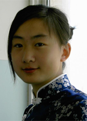

为 梦 想 奋 斗 着
尊敬的各位老师、同学们大家好。我叫高阳，是传媒学院05级播音主持专业的学生。能站在这里，我是幸运的，因为在我之前还没有一个来自播音主持专业的学生站在这个“理想与成才”报告团的讲台上。或许，在很多人的眼中，艺术系的学生总是学习松懈、生活散漫，是校园里的“另类”，他们谈不上奋斗，也没有什么好的学习心得可以和大家分享。可是今天，我希望通过讲述我自己的学习生活来让大家重新认识一个为梦想而时刻奋斗着的艺术系学生，
梦想，其实每一个人都有，然而在对待梦想的态度上，我们却各有不同。有些人用毕生精力去追求自己的梦想，而有些人则因为现实
梦想，其实每一个人都有，然而在对待梦想的态度上，我们却各有不同。有些人用毕生精力去追求自己的梦想，而有些人则因为现实
的种种制约条件不得不放弃自己的梦想，而我想我属于前者。从小爱笑爱唱的我一直有一个梦想，那就是长大之后能成为一名优秀的主持人。我喜欢站在灯光四射的舞台上成为焦点的感觉，喜欢主持这一富有激情与变化又具有挑战性的职业。我在生活中虽然不是一个高调的人，但却偏偏热爱电视这一星光灿烂的舞台。对文艺的喜爱使我从小学到高中都积极参加学校的各种文艺演出，我既是班里的文艺委员，又是学校的文艺骨干。高考填报志愿时，我毫不犹豫的选择了播音主持专业，当接到东师大录取通知书的那一刻，我觉得我的梦想之花有了绽放的机会。我满怀信心地揣着梦想来到了师大，然而到了这里我发现现实和我想象的不一样。编导系的每一个同学都是能歌善舞，伶牙俐齿，而且十分擅于表现自己，相比之下，我显得是那么低调，那么平凡。大一时，我也参加了学生会和广场晚会，但却再也找不到以前的那种优越感，再也没有了往日的光芒。我开始抵触这些活动，因为它们让我感觉自卑与失望。梦想在这一刻，离我是那样的遥远。这种迷惘也渗透到了我的学习中。大学与高中截然不同的学习方式让我彻底的从书本中“解放”出来了，我整天用上网、睡觉、逛街来填满我的课下时间。我的大一时光就在这迷迷糊糊的状态中悄悄溜走了。大一学期末成绩排名在班级里贴出来了，我在一共16个人的主持班排了第六名。虽然这不是很差的成绩，但我的心里却非常不是滋味。我觉得我可以考出更好的成绩，我一点也不比别人差，但现实是我做的很糟糕。反思自己大一这一年，似乎什么有意义的事都没做。难道一个专业知识都不扎实的人能做好一名主持人吗？想想我喜欢的主持人杨澜和鲁豫，哪个不是在校期间成绩名列前茅，课外积极参加活动的全面人才呢？我和她们的差距实在是太大了。我无比心痛，因为我在亲手一点一点地撕碎自己的梦想。不！我绝不能继续这样堕落下去，我要奋斗，为我的梦想奋斗！也就是那天过后，我更成熟了，我开始思考自己的未来，开始学会为自己的未来负责。我决定在接下来的大学三年生活珍惜每一分每一秒来弥补大一的时间浪费。
我首先从积极参加学校的各种活动开始做起。我知道逃避现实是懦弱者的表现，即使我不能成为舞台上那颗最闪亮的星，但只要我有勇气去争取展现自己的机会，只要我面带着自信的微笑站在舞台上，只要我拥有一颗平常心，不过分看重鲜花和掌声，我也一样能拥有属于自己的那一片精彩的舞台，我也一样能得到大家的认可和肯定。逃避只会让自己与舞台的距离越来越远，而这绝不是主持人的风格。所以我便开始为自己找寻表演锻炼的机会，增强自己的自信心。“机会总是属于有准备的人的”，这话一点儿没错。大二上学期，在吉林省大学生戏剧大赛即将拉开序幕之时，我校的参赛作品《君子花落为花开》正在挑选演员，得知这一消息，我眼前一亮，我知道机会来了。由于我高中期间经常参加校园话剧的演出，积累了一定的语言和表演功底，所以我觉得可以去试试。很幸运，在面试中我被选为女主角，饰演薛香凝。我十分激动，因为直觉告诉我这次演出将给我的生活带来改变。当然，这不是说因为饰演这个角色我能够获得多高的荣誉，这个我没有奢求过。我想的是我可以通过这个话剧证明自己，证明自己可以在舞台上闪耀，证明自己是自信的，是不服输的。于是我非常认真的投入到剧组每一次的排练中。我饰演的角色香凝的家庭十分贫困，这一方面让她学会了坚强和独立，另一方面又形成了她自卑、孤僻的性格，所以同学们都对她敬而远之。后来一次偶然机会同学们得知了香凝的困难，于是大家理解了她，香凝也在大家的帮助下重新以乐观的态度面对生活。虽然我的生活经历和香凝不一样，但是我和她在精神上却有很多相似之处。我们都是在挫折中学会自强不息，在困难和孤独中挣扎和成长，而且香凝的刻苦努力和顽强的意志也在深深地激励着我，演出的那些日子，我与角色融入一起，我觉得我就是香凝，在正式演出时，我觉得自己完全不是在表演一个和我毫不相干的人，相反，我是在演自己。我的动作，我的感情都是自然表露和表现的，因为香凝的心境和精神和我的是相通的，我好似在向观众讲述我自己的故事。我忘了自己是在舞台上表演，我被香凝感动着，被自己感动着。在话剧谢幕时，当我听到观众们热烈的掌声时，我知道那不是形式化、敷衍的掌声，那是观众发自内心的、真诚的掌声。那一刻，我发现自己是多么热爱脚下的舞台，它让我能够发掘自己的潜能，它让我不平凡。由于我真情的表演，在大赛中获得了个人优秀表演奖，我们剧组也获得了优秀的成绩。
通过这次话剧演出，我重新找回了从前那个爱唱爱跳的我，最终获得的荣誉让我相信我仍然可以在舞台上成为闪亮的星，只要我自信。于是寒暑假里我开始积极参加社会上举办的各种文艺类大赛。在全国推选文艺新人活动中，我凭借主持《话说长江》和话剧《雷雨》中繁漪一角的表演获得“大连十佳”的称号；在大连福佳新天地的形象代言人选拔大赛中，获得了优秀奖；在大连电视台举办的“小牛倌”电视节目主持人大赛中获了优秀奖。
现在的我已不是大一那个自卑、迷茫的女孩了，各种各样丰富多彩的活动让我练就了自信、乐观、独立、坚强。同时，我也深知要想成为一名具有综合素质的主持人，博学多才是基础，也是关键。我不想成为一个大脑空空的、花瓶式的主持人，我需要不断扩充知识，找寻自己的优势之处，从多方面提高自己的能力。这样想着，我便有了斗志和方向。成为一名合格的主持人，普通话是一定要过关的，所以我平时十分注意语言的学习与训练，最终能够在全国普通话水平测试取得一级甲等的成绩。此外，我还十分重视外语的学习，因为现代的中国传媒越来越需要具有良好外语水平的复合型电视人才，正是认识到了外语的重要性，所以在大学期间我通过报考一些外语考试来督促自己学习，提升自己的外语水平。从此我从以前那个最闲的人变成了最忙的人。我的全部闲暇时间都奉献给了图书馆，我总是最晚一个离开图书馆的，拖着疲惫的步伐，披着浓重的夜色走在通往寝室的那条小路上。当室友和朋友们还沉浸在网上冲浪时，我却在图书馆忘我的苦读。那段时光我的确失去了一些东西，比如消遣的快乐、爱情的甜蜜、朋友的陪伴等等，但我不后悔自己的这些舍弃，相反，我觉得自己现在的生活很充实，很有价值。那时的我就像一只青虫，忍耐着寂寞与青涩，盼望和等待着最终破茧而出的那一刻。而这一刻的最终来临，肯定了我无数个日日夜夜的辛勤努力，我的付出最终收获了丰硕的果实：在雅思考试中我考取了7.5分，这个分数足够可以申请攻读英国几所最著名大学的研究生，我也因此获得了北京新东方优秀学员证书和奖学金；在国际日语二级水平测试中，我以283拿到了合格证书，超过了合格线四十多分，这对于靠四个月“自学成才”的我已经实属不易了；在全国大学生本科类英语竞赛中获得了三等奖；同时以B+拿到了四六级口语证书。
很多人对我说，高阳，你真有语言天赋啊！我哪里有什么语言天赋，即使有，那一点点的天赋也不过是组成成功篇章的一个小逗号，而后天的勤奋努力才是让这篇章得以圆满完成的最终句号。没人能够不付出就能获得惊人的成绩，外语水平的提高更需要持久的耐力与拼搏。
在专业课方面，我也不再像大一那样马虎大意，虽然准备各种语言考试会占有很多精力，但我从没轻视专业课的学习。我一直认为，全凭考前的临时突击是不能保证优异的成绩的，只有平时的慢慢积累才能真正掌握知识，应用知识，取得理想的成绩。由于我每天都看一点专业书籍，考试前我不必像有些同学那样临时“悬梁刺股”，而是是以逐渐积累的学习方式去学习专业知识。我每天过着三点一线的生活，穿梭在图书馆，寝室，食堂之间。为了节省时间，我都是独来独往，因为同学们的作息时间不同，做什么事都要结伴而行免不了要相互等待，白白浪费掉很多宝贵时间。有时我也寂寞，我也孤独，但是我的信念并没有被孤独吞噬。有人说，孤独的人是可耻的。但是，我要说，为了自己的目标而忍受孤独不仅不可耻，反而是高尚的。于是我不再把孤独当作一回事。我并不聪明，但是我认真踏实，因为比别的同学付出多几倍的努力，我的专业课成绩自从大二开始，就一直排在全班第一名，并获得了各种奖学金，如国家奖学金、校长奖学金、学有专长奖学金、教师技能奖学金等，并两次被评为校优秀学生。
大四上学期，我获得了师大推荐校外免试生的资格，需要做出外保和内保的唯一选择。这是个两难决定，本校对我非常熟悉，成功在帷握之中；而中国传媒大学，历年考取难度都很大。一些老师和同学也提醒我，说风险太大。可中国传媒大学是我从小一直向往的学校，很多优秀的主持人像鲁豫、周涛、李咏、白岩松都是从这所学校毕业的，它是培养杰出传媒人才的摇篮，能到那里深造学习是每一个传媒学生梦寐以求的机会，可以说，如果踏入了中国传媒大学的门槛，就等于朝着我的梦想迈进了一大步，如果这次放弃外保的机会，我可能会终生后悔。经过反复考虑，我决定放手一搏，毕竟人生能有几次搏呢？我宁愿在挑战中失败，也不愿在保守中成功。于是，我不再犹豫了，我要勇敢地去争取机会，勇敢地去面对挑战。
我孤身一人来到北京，走进传媒大学的校园，坐在校园的长椅上，看着这个外观并不起眼，却培养了那么多传媒精英的学校，我心潮澎湃，思绪万千，当有人问起，你是那来的，我意识到，我不仅代表我个人，我更代表着我的学校，我要为师大争光！也许正是因为这种积极的心态和大学期间的知识积累，我最终取得了电视与新闻学院广播电视艺术学校外推免生的第一名。在此，我要深深地感谢我的学校和老师，因为是师大严谨的学风、优越的学习条件和浓厚的学术氛围培养了我，没有师大，就没有今天的我。同时，我要告诉我的学弟学妹们：你们要努力、要自信，面对梦想，要永不言弃，师大的学生，我们是最棒的！
我感谢大一的挫折与失败，因为正是这些失败敲响了我人生的警钟，警示着我不要挥霍青春。回首大学时光，我问心无愧，我每天都在奋斗。每天都在进步。作为一个走在别人前面的独行者是需要付出巨大代价的，但我从不计较自己的失去。我不后悔自己没有一天安逸的在网上聊天、看电影，不后悔自己从没有睡过一天懒觉，哪怕是周六周日，不后悔没有谈一场纯真浪漫的校园恋爱。尽管我也曾怀疑过，也曾试图放弃过，但最终是对梦想的执着追求让我坚持下来了。“成功的花，人们只惊羡她现时的明艳。然而当初她的芽儿，浸透了奋斗的泪珠，洒遍了牺牲的血雨！”。我喜欢这句话，因为它让我深深懂得光辉的荣誉背后是需要经历无数次的失败、忍耐和挣扎。
今天我站在“理想与成才”的讲台上，和大家一起分享我的梦想故事时，我依然坚定着自己的梦想。同学们，我们未来的人生路途很漫长，也许会遇到这样或那样意想不到的困难，但是有梦想在，我们就有了坚定的方向，有梦想在，我们就有了战胜挫折的勇气和决心，有梦想在，我们的人生就有了希望！我还还会继续着我的主持梦，继续前行在为梦想奋斗的征途上！
我首先从积极参加学校的各种活动开始做起。我知道逃避现实是懦弱者的表现，即使我不能成为舞台上那颗最闪亮的星，但只要我有勇气去争取展现自己的机会，只要我面带着自信的微笑站在舞台上，只要我拥有一颗平常心，不过分看重鲜花和掌声，我也一样能拥有属于自己的那一片精彩的舞台，我也一样能得到大家的认可和肯定。逃避只会让自己与舞台的距离越来越远，而这绝不是主持人的风格。所以我便开始为自己找寻表演锻炼的机会，增强自己的自信心。“机会总是属于有准备的人的”，这话一点儿没错。大二上学期，在吉林省大学生戏剧大赛即将拉开序幕之时，我校的参赛作品《君子花落为花开》正在挑选演员，得知这一消息，我眼前一亮，我知道机会来了。由于我高中期间经常参加校园话剧的演出，积累了一定的语言和表演功底，所以我觉得可以去试试。很幸运，在面试中我被选为女主角，饰演薛香凝。我十分激动，因为直觉告诉我这次演出将给我的生活带来改变。当然，这不是说因为饰演这个角色我能够获得多高的荣誉，这个我没有奢求过。我想的是我可以通过这个话剧证明自己，证明自己可以在舞台上闪耀，证明自己是自信的，是不服输的。于是我非常认真的投入到剧组每一次的排练中。我饰演的角色香凝的家庭十分贫困，这一方面让她学会了坚强和独立，另一方面又形成了她自卑、孤僻的性格，所以同学们都对她敬而远之。后来一次偶然机会同学们得知了香凝的困难，于是大家理解了她，香凝也在大家的帮助下重新以乐观的态度面对生活。虽然我的生活经历和香凝不一样，但是我和她在精神上却有很多相似之处。我们都是在挫折中学会自强不息，在困难和孤独中挣扎和成长，而且香凝的刻苦努力和顽强的意志也在深深地激励着我，演出的那些日子，我与角色融入一起，我觉得我就是香凝，在正式演出时，我觉得自己完全不是在表演一个和我毫不相干的人，相反，我是在演自己。我的动作，我的感情都是自然表露和表现的，因为香凝的心境和精神和我的是相通的，我好似在向观众讲述我自己的故事。我忘了自己是在舞台上表演，我被香凝感动着，被自己感动着。在话剧谢幕时，当我听到观众们热烈的掌声时，我知道那不是形式化、敷衍的掌声，那是观众发自内心的、真诚的掌声。那一刻，我发现自己是多么热爱脚下的舞台，它让我能够发掘自己的潜能，它让我不平凡。由于我真情的表演，在大赛中获得了个人优秀表演奖，我们剧组也获得了优秀的成绩。
通过这次话剧演出，我重新找回了从前那个爱唱爱跳的我，最终获得的荣誉让我相信我仍然可以在舞台上成为闪亮的星，只要我自信。于是寒暑假里我开始积极参加社会上举办的各种文艺类大赛。在全国推选文艺新人活动中，我凭借主持《话说长江》和话剧《雷雨》中繁漪一角的表演获得“大连十佳”的称号；在大连福佳新天地的形象代言人选拔大赛中，获得了优秀奖；在大连电视台举办的“小牛倌”电视节目主持人大赛中获了优秀奖。
现在的我已不是大一那个自卑、迷茫的女孩了，各种各样丰富多彩的活动让我练就了自信、乐观、独立、坚强。同时，我也深知要想成为一名具有综合素质的主持人，博学多才是基础，也是关键。我不想成为一个大脑空空的、花瓶式的主持人，我需要不断扩充知识，找寻自己的优势之处，从多方面提高自己的能力。这样想着，我便有了斗志和方向。成为一名合格的主持人，普通话是一定要过关的，所以我平时十分注意语言的学习与训练，最终能够在全国普通话水平测试取得一级甲等的成绩。此外，我还十分重视外语的学习，因为现代的中国传媒越来越需要具有良好外语水平的复合型电视人才，正是认识到了外语的重要性，所以在大学期间我通过报考一些外语考试来督促自己学习，提升自己的外语水平。从此我从以前那个最闲的人变成了最忙的人。我的全部闲暇时间都奉献给了图书馆，我总是最晚一个离开图书馆的，拖着疲惫的步伐，披着浓重的夜色走在通往寝室的那条小路上。当室友和朋友们还沉浸在网上冲浪时，我却在图书馆忘我的苦读。那段时光我的确失去了一些东西，比如消遣的快乐、爱情的甜蜜、朋友的陪伴等等，但我不后悔自己的这些舍弃，相反，我觉得自己现在的生活很充实，很有价值。那时的我就像一只青虫，忍耐着寂寞与青涩，盼望和等待着最终破茧而出的那一刻。而这一刻的最终来临，肯定了我无数个日日夜夜的辛勤努力，我的付出最终收获了丰硕的果实：在雅思考试中我考取了7.5分，这个分数足够可以申请攻读英国几所最著名大学的研究生，我也因此获得了北京新东方优秀学员证书和奖学金；在国际日语二级水平测试中，我以283拿到了合格证书，超过了合格线四十多分，这对于靠四个月“自学成才”的我已经实属不易了；在全国大学生本科类英语竞赛中获得了三等奖；同时以B+拿到了四六级口语证书。
很多人对我说，高阳，你真有语言天赋啊！我哪里有什么语言天赋，即使有，那一点点的天赋也不过是组成成功篇章的一个小逗号，而后天的勤奋努力才是让这篇章得以圆满完成的最终句号。没人能够不付出就能获得惊人的成绩，外语水平的提高更需要持久的耐力与拼搏。
在专业课方面，我也不再像大一那样马虎大意，虽然准备各种语言考试会占有很多精力，但我从没轻视专业课的学习。我一直认为，全凭考前的临时突击是不能保证优异的成绩的，只有平时的慢慢积累才能真正掌握知识，应用知识，取得理想的成绩。由于我每天都看一点专业书籍，考试前我不必像有些同学那样临时“悬梁刺股”，而是是以逐渐积累的学习方式去学习专业知识。我每天过着三点一线的生活，穿梭在图书馆，寝室，食堂之间。为了节省时间，我都是独来独往，因为同学们的作息时间不同，做什么事都要结伴而行免不了要相互等待，白白浪费掉很多宝贵时间。有时我也寂寞，我也孤独，但是我的信念并没有被孤独吞噬。有人说，孤独的人是可耻的。但是，我要说，为了自己的目标而忍受孤独不仅不可耻，反而是高尚的。于是我不再把孤独当作一回事。我并不聪明，但是我认真踏实，因为比别的同学付出多几倍的努力，我的专业课成绩自从大二开始，就一直排在全班第一名，并获得了各种奖学金，如国家奖学金、校长奖学金、学有专长奖学金、教师技能奖学金等，并两次被评为校优秀学生。
大四上学期，我获得了师大推荐校外免试生的资格，需要做出外保和内保的唯一选择。这是个两难决定，本校对我非常熟悉，成功在帷握之中；而中国传媒大学，历年考取难度都很大。一些老师和同学也提醒我，说风险太大。可中国传媒大学是我从小一直向往的学校，很多优秀的主持人像鲁豫、周涛、李咏、白岩松都是从这所学校毕业的，它是培养杰出传媒人才的摇篮，能到那里深造学习是每一个传媒学生梦寐以求的机会，可以说，如果踏入了中国传媒大学的门槛，就等于朝着我的梦想迈进了一大步，如果这次放弃外保的机会，我可能会终生后悔。经过反复考虑，我决定放手一搏，毕竟人生能有几次搏呢？我宁愿在挑战中失败，也不愿在保守中成功。于是，我不再犹豫了，我要勇敢地去争取机会，勇敢地去面对挑战。
我孤身一人来到北京，走进传媒大学的校园，坐在校园的长椅上，看着这个外观并不起眼，却培养了那么多传媒精英的学校，我心潮澎湃，思绪万千，当有人问起，你是那来的，我意识到，我不仅代表我个人，我更代表着我的学校，我要为师大争光！也许正是因为这种积极的心态和大学期间的知识积累，我最终取得了电视与新闻学院广播电视艺术学校外推免生的第一名。在此，我要深深地感谢我的学校和老师，因为是师大严谨的学风、优越的学习条件和浓厚的学术氛围培养了我，没有师大，就没有今天的我。同时，我要告诉我的学弟学妹们：你们要努力、要自信，面对梦想，要永不言弃，师大的学生，我们是最棒的！
我感谢大一的挫折与失败，因为正是这些失败敲响了我人生的警钟，警示着我不要挥霍青春。回首大学时光，我问心无愧，我每天都在奋斗。每天都在进步。作为一个走在别人前面的独行者是需要付出巨大代价的，但我从不计较自己的失去。我不后悔自己没有一天安逸的在网上聊天、看电影，不后悔自己从没有睡过一天懒觉，哪怕是周六周日，不后悔没有谈一场纯真浪漫的校园恋爱。尽管我也曾怀疑过，也曾试图放弃过，但最终是对梦想的执着追求让我坚持下来了。“成功的花，人们只惊羡她现时的明艳。然而当初她的芽儿，浸透了奋斗的泪珠，洒遍了牺牲的血雨！”。我喜欢这句话，因为它让我深深懂得光辉的荣誉背后是需要经历无数次的失败、忍耐和挣扎。
今天我站在“理想与成才”的讲台上，和大家一起分享我的梦想故事时，我依然坚定着自己的梦想。同学们，我们未来的人生路途很漫长，也许会遇到这样或那样意想不到的困难，但是有梦想在，我们就有了坚定的方向，有梦想在，我们就有了战胜挫折的勇气和决心，有梦想在，我们的人生就有了希望！我还还会继续着我的主持梦，继续前行在为梦想奋斗的征途上！